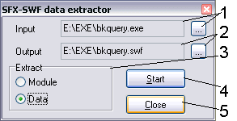
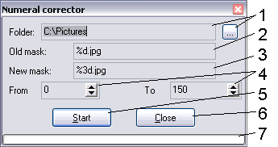
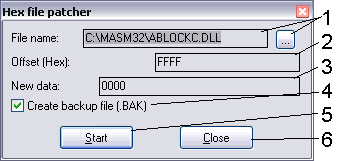
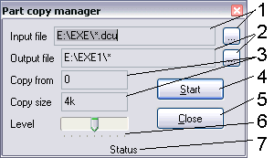
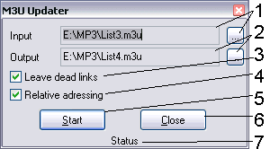
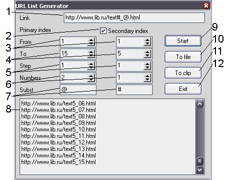
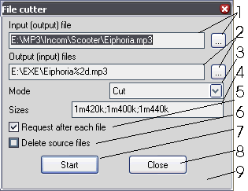

Miscellaneous operations
Version: 1.0
Author: Python <smisoft@rambler.ru> (c) SmiSoft (SA)
What is this:
Later, this set of commands was included into plugin tar_media, but I think, that
it's not good and accepted solution to divide that functionality into different plugins.
So, tar_amp and tar_misc has appeared.
All detailed information you can find in alias description.
Aliases:
These commands do not take command line parameters and call modal window during
execution. Don't even try to unload plugin, when one of windows opened, this will
perform fatal error.
- ~exe2swf
Cuts the executed unit for autoplay Flash files.
If you have large collection of different flash films, and all of them have
the extension exe, you keep a huge portion of completely unnecessary data. It is
flash's players, linked to each file. If you'll cut off these units, you will
save about 800 kilobytes from each file. You can extract even player from file,
using the switch.
The last used strings are stored in INI file.

- Input file. On the right - button to select file, the direct editing of a
field is forbidden. The file should necessarily be executed (extension .EXE),
differently algorithm can work incorrectly.
- Output file. On the right - button to select file, the direct editing of
a field is forbidden. The file must not exist. Its extension should be .swf,
that Flash player could it correctly playback.
- Operation's mode. Depending on switch's position, name of an output file
is automatically generated at choice entry. At change of a switch, name
automatically varies - watch it!
- Start of conversion. During execution the diagnostic messages may appear.
The format of an input file detected fully automatically, that can result in
misunderstanding. In any case, the output file is generated, even if its format
is incorrect. I recommend to view all output files. If the file can not be
transformed, you can send me the reference to its source in the Internet, but
not the file, I don't need trash in my mailbox. Conversion also can start
on Enter in input fields.
- Exit from the program with saving all data. Also you can exit on Esc.
- ~renumber
Change of the mode of indexing of files
The command is intended for change of number of significant digits in the
file names, ordered by numbers, (not by alphabet!)
For example, let you have 100 files named file1 file2... file10... Will they
show in any file manager in right order? No! (Exept for Windows XP's explorer)
So, we start my plugin, search for problem files' folder, enter parameters and all!
Press Π, wait and receive result. Program is not foolproof, be care.

- Input folder. On the right - button to select folder, direct editings it
forbidden. Because of standard function used, translation of this dialogue is
not performed. The folder should exist.
- Input file names. Here it is necessary to write a filename with number as
%nd, where n - minimum number of significant digits (for example, 001 - 3
significant digits). If you need to enumerate files (convert a.jpg, b.jpg and so on
into 001.jpg, 002.jpg..., then you should use special renamer, for example, built in
Total Commander utility).
- Output filename. Must be written like input file name, only that n was not
less number of significant digits last file's number. If want to return all on
an old place, swap an old and new name and repeat conversion.
- Boundaries of conversion. Files with numbers in given bounds will be processed.
Strictly speaking, limits can be specified inexact - nonexistent files are skipped
without problems, so if you have only files 1.jpg and 2.jpg and you will transform
them in 001.jpg and 002.jpg, you can leave default bounds (from 0 up to 1000),
all will pass as necessary, but spent more time. Besides if you have 5000 files
and you convert they to 4 significant digits, than you should use bounds from 0
to 999 (files with numbers more than 999 are satisfy condition. You can specify
full range - anything terrible (except for unproductive loss of time) will not take place.
- Start. Everything was detailer earlier. You can also start processing by pressing Enter in edit box.
- Exit from the program with saving of the data. Also you can exit by pressing Esc.
- Progress bar. Shows operation's progress. When file not exists, moves faster, when
execute operation...
- ~patch
Modification of the file instead of the hexadecimal editor
Sometimes it is required correct something in the file of the game (for
example, to reach unlimited ammo, fuel or health), and the hexadecimal editor
is not present in your system. Then we use my plugin, we copy here parameters
from a magazine (in general, the algorithm was born, when it was required URGENTLY
to enter cheat into the game, and cheat was as advice: write in such file on such
offset such bytes).

- File for modification. On the right - button to select file, direct editing
forbidden. You can find file name in cheat's description. File must not be read-only!
- Offset in the hexadecimal format without leading 0x and $. Take it from the description.
- New data. Size detected automatically (from string's length), so be carefull
when entering data. Take it from description.
- Is it necessary to create a backup copy. If so, you can restore the original file
and continue experiments.
- Start conversion. Also it is possible to start by pressing Enter from text boxes.
- Exit with saving of parameters. It is possible also to exit on pressing Esc.
- ~pcopy
Partial copying - clone of the utility PieceCopy, with source
Sometimes it is required to copy the file not completely, but partially,
for example, only first 100 bytes. It can appear useful, if it is necessary to
show gigabytes MP3 collection to the friend, but it is on the hard disk, and
you have no such number of CD-RWs.
Firstly, I need to test the install generator, it was necessary some times
compile all script. It takes about 15 minutes - too many to be good. I create
this program and compress only first 100 bytes. These files were compressed
after some seconds and I could debug script very fast. Some months later, another
install generator's script was debugged by same way.

- Input file. On the right - button to select file, but is possible to enter
it manually. You can use masks in file name. The search will be performed until
given depth (see item 6) reached. Full input's directory structure will be
replicated in output folder. You MUST NOT specify output directory enclosed to
input - this will perform an unknown error. Masks same, as by search in an
operating system on F3 or in Norton Commander on Alt-F7.
- Output file. On the right - button to select, but is possible to edit manually.
The directory of output files should not lay inside the directory for input files
- differently there will be a uncontrollable filling of a disk space by stub files
and the output directory should completely be deleted. In a name of an output
file masks of the following sort also are allowed:
- * Or *.* - is substituted on a real name of the processed file with extension
- *.ext - is substituted on a filename with extension .ext
- name.* - is substituted on the file name with source extension
- {filename} - is substituted on complete filename
- { filename i1} - is substituted on a piece of a filename, since i1 position
- { filename i1 i2} - is substituted on a piece of a filename with i1 position of length i2
- {name}, {name i1}, {name i1 i2} - same, but only for a filename (without the extension)
- {ext}, {ext i1}, {ext i1 i2} - same, but for the extension (with a point)
- Beginning and length - offset, whence copying starts and its length. It is
possible to specify a size like this: ... g... m... k... - accordingly, number
of a gigabyte, megabyte, kilobyte and byte. The fractions (like 1.44 Mb) are
not supported (but it is possible to write like 1M450K). The register has no
value. It is possible to use blanks, but only to improve readership - algorithm ignores blanks.
- Start conversion. In an operating time in status line (see item 7) you can see
processed file. After completion of conversion, status will reset. The conversion
can be stopped by the "stop" button. However it will take a short time (depending
on the output folder's drive speed), last file will completely copied first.
Also conversion can be started by the button Enter from text boxes.
- Exit from the program with saving of the data. Also it is possible to exit on Esc.
- Maximum deep of folders. Most left position - zero (no recurce search). The
most right position - 8 subfolder's depth, corresponds to the standard ISO. It
allows to set the output directory inside input (use with caution!).
- Status line. Shows a state of the program, or name of the processed file.
- ~m3ufresh
Update references in M3U files (playlist's for Winamp and other players)
If you have many playlists (for example, created in WinAmp), but moved
many files around directories, this utility will help fastly restore correct
references. The program simply searches for the first file with the same name,
as absent and writes the reference to this file in playlist. Certainly, at
renaming files the given utility will not help.
Example: a number of MP3 files of the different performers laid in one
directory. There were some playlists for them. Then files have decomposed in
the directories (depending on the performers and albums), but did not rename.
Certainly, playlists became incorrect, WinAmp can not find files, that is why
does not play back them.
Note: if there are some files with an identical name, the program selects
first retrieved.

- Input playlist. On the right - button to select, the manual editing
forbidden. Should be created manually, or in Winamp. The operation with other
playlist's types is not guaranteed. The file should exist.
- Output playlist. On the right - button to select, the manual editing
forbidden. When deleting "dead" references (item 3) deleted only string with
file name, comment (usually, containing the extended information for the file)
remains. Therefore after processing the file, I recommend to open it in WinAmp
(or similar program), refresh the information and save the file.
- If checked, references to unfound files will be saved, otherwice - removed.
- If checked, references to files will be localized to output playlist's folder,
otherwise - a complete path (with the disk and all directories). Network (UNC)
names are not supported.
- Start conversion. The process can be interrupted at any moment, but it will
take some seconds to finish last search operation. If the process is interrupted
by the user, the output file is not saved. Also conversion can be started on Enter
from text boxes.
- Exit from the program with saving of a state. Also it is possible to exit on Esc.
- Status lines - shows, what file now handles the program.
- ~BookGen
Helps you to print a book in Word practically any version
- ~BookGen2
This helps you to print books in ACDSee
- ~Id3Copy
Copying and change ID3 tags
- ~Txt2htm
Conversion of the text tables into HTML tables
- ~ListGen
Create the list of existing files
- ~ListGen2
Create list of URLs to use in download manager
Simply set appropriate parameters and press "Start". If manager running
and supports clipboard, press "To clip", otherwice press "To file" and export
list to manager.

- Set link, where appropriate numbers replaced with given string.
- If you need double enumeration
- Start of sequence
- End of sequence
- Step of sequence
- Length of sequence (leading zeroes will be placed).
- Replacing string.
- Generated sequence. Press "Start" to get it.
- Start generation. Also, you can start it by Enter from text boxes.
- Saves generated sequence to file
- Saves generated sequence to clipboard
- Exit with saving of a state. Also, you can exit by Esc.
Note: primary index varies faster, than secondary (when secondary indexing used).
- ~FileCut
Cut file into pieces of specified size

- Input file. On the right - button to select. Manual correcting forbidden.
Attention! File is input for cutting and output for concatenation!
- Output file. On the right - button to select. Make sure, that you specify
special symbol %nd in this name, where n is number of significant digits in
number (for example, 001 - 3 symbols). If there are no such symbol, next
files will overwrite previous and you will lost data. Exception - if you
generate sequence to floppy (or other removable) media, but in this case you
cann't control concatenate operation. Attention! These files are input for
concatenating operation and output for cutting.
- Work mode - cut or concat. Depend on selected mode, item 4 can vary.
- Work parameters:
- On cut - size of parts divided by semicolon. If file size is more than
sum of specifyed sizes, then remaining files will have size, as last size
specified (for example, 1m440k in out case).
- On concat - part numbers, subsituted to mask. Parts may be specifyed as
numbers or interval divided by comma, for example 1,2,5-8 means
numbers 1,2,5,6,7,8. You can specify numbers in any order, even 8,7,
6,5,4,3,2,1, but you must know, what are you doing. If list empty,
then program will try to automatically guess it, seeking for first contignous
interval of numbers, satisfying given mask. You should use this option only
if parts created with this program and parts located on hard drive.
- On concat with list - list file name. On right - button to select.
In file you should specify all concatenating files, one name at a line.
Empty lines and lines, started with semicolon ignored.
- If checked, before each file part operation program will show a message.
Useful, if you write or read parts directly from removable media - you will
have time to swap disks.
- If you work with removable media, you'd beter to uncheck this - diskettes are
pretty unreliable. But if you concat files from hard drive, then you may check
if, if you wish.
- Start processing. Also, you can start by pressing Enter in text boxes.
- Exit. Also, you can exit by pressing Esc.
- Status line. Display current file's name. Progress not displayed anywhere.
- A last version, you can create BAT file (idea came from Katarn's File Cutter)
- program will create BAT file named as a mask (but without a number). If you'll
put all files together and run that BAT, input file will be created without
this program. Part files are not deleted.
History:
[+] New feature
[*] Fixed bug
[-] Removed feature
Version 1.0 - 08.07.05
[+] Because of plugin changed name, history was reset and version started from 1.0 again.
Version 1.1 - 10.07.05
[+] New alias ~FileCut